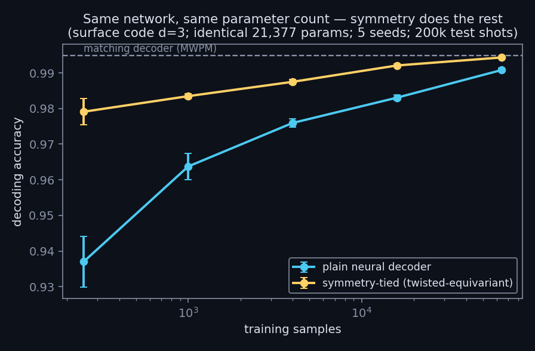

← research · playground · the six-year story · code & logs
An ML decoder tied to the surface code's exact symmetry — at literally identical parameter count — is ~4× more sample-efficient and reaches the matching-decoder baseline where the plain network still lags.

Decoding is the practical bottleneck of fault tolerance, and real-device syndrome data is the scarce resource. QEC codes have exact lattice symmetries, so weight-tying should buy sample efficiency — but the naive version fails: a lattice-invariant decoder came out ~10 points worse than plain, because the symmetry maps the logical operator to an equivalent-up-to-stabilizers representative. The correct formulation is a twisted equivariance, (syndromes, label) → (P·syndromes, label ⊕ χ·syndromes), with the twist mask χ solved exactly from the detector error model by GF(2) elimination and verified mechanism-by-mechanism before use.
Syndromes sampled with stim; MWPM baseline from pymatching on the exact detector error model. A verifier accepts a symmetry only if it maps the error model onto itself with the observable twist exactly — which surfaced a second finding: circuit-level noise breaks naive spatial symmetry via the CNOT extraction schedule's hook errors. Schedule-aware group actions are the open frontier.
Part of a ~30-experiment program run under one hard rule: no result is recorded before its run completes. Methods and logs: github.com/dwatces.